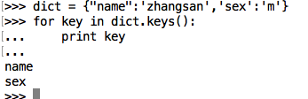

遍历
通过for ... in ... 我们可以遍历字符串、列表、元组、字典等
字符串遍历
>>> a_str = "hello world"
>>> for char in a_str:
... print(char,end=' ')
...
h e l l o w o r l d
列表遍历
>>> a_list = [1, 2, 3, 4, 5]
>>> for num in a_list:
... print(num,end=' ')
...
1 2 3 4 5
元组遍历
>>> a_turple = (1, 2, 3, 4, 5)
>>> for num in a_turple:
... print(num,end=" ")
1 2 3 4 5
字典遍历
<1> 遍历字典的key（键）

<2> 遍历字典的value（值）

<3> 遍历字典的项（元素）

<4> 遍历字典的key-value（键值对）

想一想，如何实现带下标索引的列表遍历
>>> chars = ['a', 'b', 'c', 'd']
>>> i = 0
>>> for chr in chars:
... print("%d %s"%(i, chr))
... i += 1
...
0 a
1 b
2 c
3 d
enumerate()
enumerate() 函数用于将一个可遍历的数据对象(如列表、元组或字符串)组合为一个索引序列，同时列出数据和数据下标，一般用在 for 循环当中。
>>> chars = ['a', 'b', 'c', 'd']
>>> for i, chr in enumerate(chars):
... print("%d %s"%(i, chr))
...
0 a
1 b
2 c
3 d